Coming up with performance sheet for video editting
It sounds like you're considering the dynamics of hourly rates in video production, particularly between a producer and an editor. If there's efficient communication and minimal back-and-forth, paying a higher hourly rate can make sense because the overall flow of production is smoother and potentially faster. Here's how that can work out:
-
Higher Hourly Rate, Less Time: If the producer and editor are highly skilled and coordinate well, a higher hourly rate is justified because they spend less time on revisions and communications. This means that even though the rate per hour is higher, the total cost might not necessarily be more than a lower hourly rate with inefficient workflows.
-
Quality of Work: With experienced professionals, the quality of the output is often higher. Investing in skilled professionals can lead to a better end product, which can be crucial depending on the project’s goals (like for commercial or high-visibility projects).
-
Reduced Total Cost: Efficient workflows lead to fewer hours billed overall. Even if the hourly rate is higher, the total cost can be lower compared to a scenario where there's a lot of inefficient back-and-forth that extends the timeline and accumulates more hours.
-
Predictability in Budgeting: When working with professionals who manage their time effectively, it's easier to predict how long tasks will take, which helps in budgeting and planning.
-
Client Satisfaction: Faster turnaround and high-quality outputs typically lead to higher client satisfaction, which is valuable for future business and reputation.
Choosing to pay a higher hourly rate can be a strategic decision to ensure efficiency and quality in video production projects. It's important to weigh these potential benefits against the total budget and project requirements.
Rates gets mentioned by editor we have 400 contracts to deliver. No need to argue on the time cost which they know the best among the market.
References
Talking to the Nebyu
Setting up the sheet > https://docs.google.com/spreadsheets/d/1dtuG0oJte3ebFubnp1TEZ7BdHupkckLASYqm96iRgMc/edit#gid=1942812161
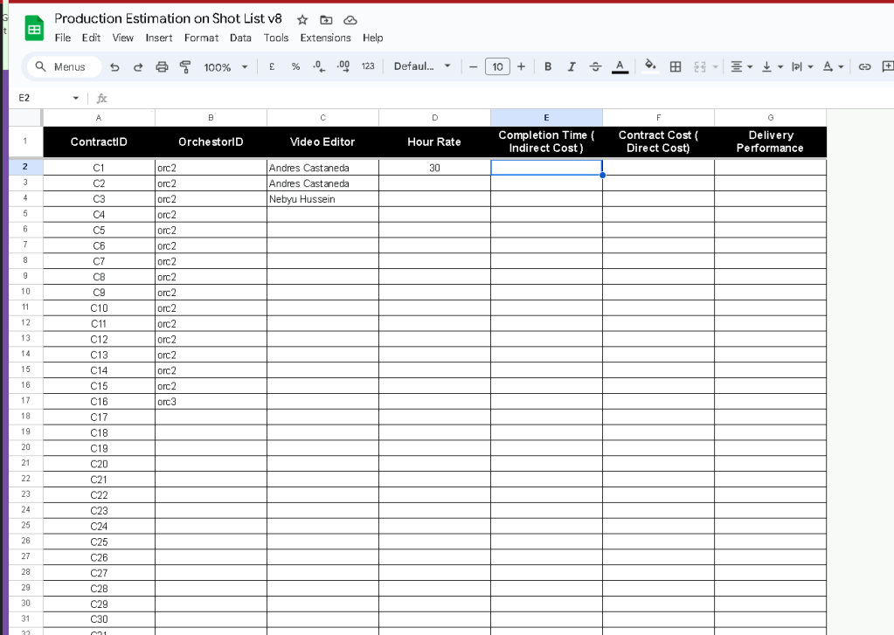
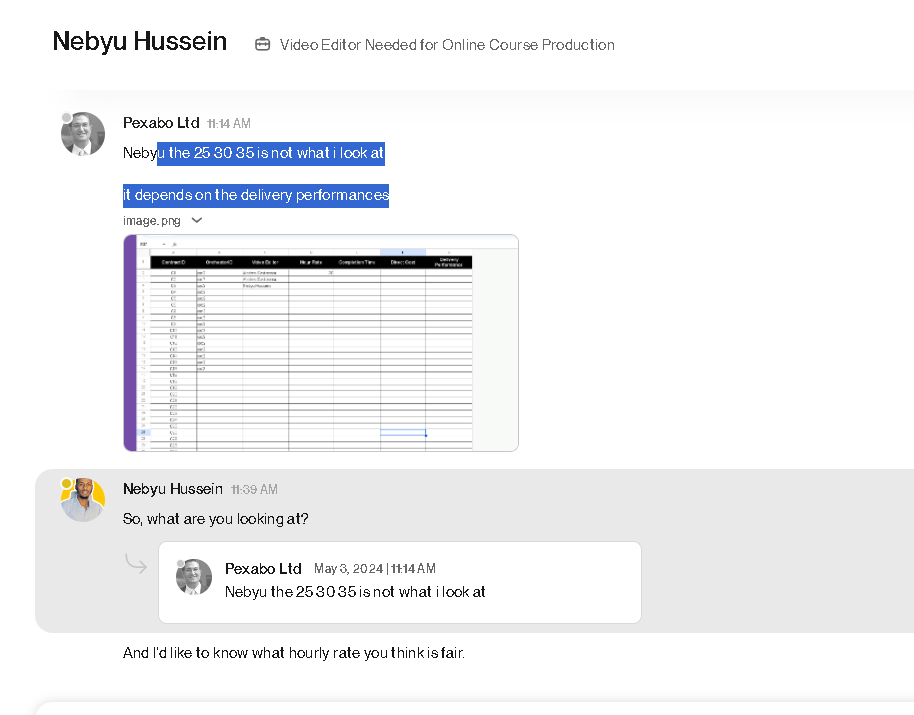
REALITY
Existing Tasks and the back and forth game
- move comments to frame.io ( completed )✅
Link > https://rifaterdemsahin.com/2024/04/30/moving-comments-to-frame-io/
- get confirmation on the production flow with andres⏳
Make sure section A issues are fixed ( in progress )⏳
-
Andres to demonstrate the production flow delegation > competence ( weakest point )⏳
-
Get corrected Videos from Andres ( waiting )⏳
-
pay the init milestone
One more meeting for confirmation of production flow 110 to 120 dollars
- complete the flow for section B
Flow > https://miro.com/app/board/uXjVKR5-Ces=/?moveToWidget=3458764587478451069&cot=14 ( completed )✅
-
seperate the videos into frames✅
-
complete the estimation section B⏳
-
Open a new milestone in upwork
-
Negotiate
-
Start Postprod for section B with Production Flow
-
Delegate Section C to another editor and compare the performce based on
Delivery Time
-
Delivery Cost
-
Delivery Seconds
-
Have the base line and work with 2 editors and delivery concurrently
Waiting game it turns out > section based workflow makes sense
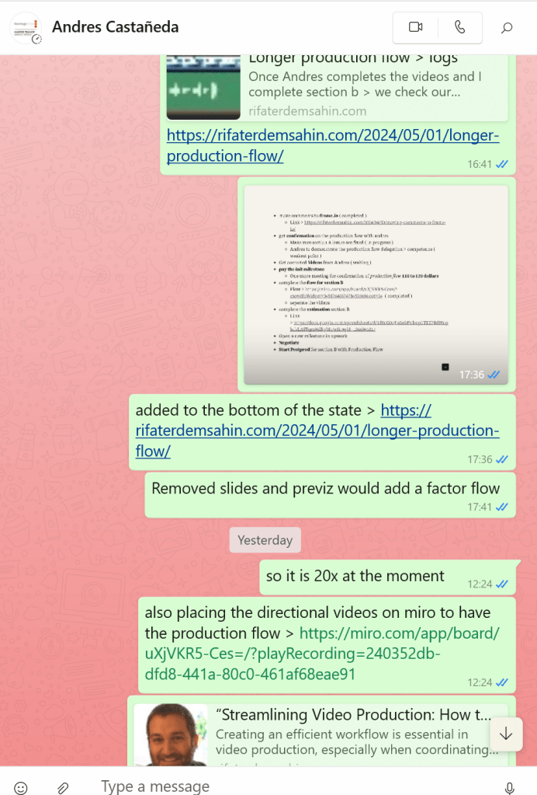
before sending message to andres download and calculate
Footages to estimation should be straight forward i need the seconds coming in
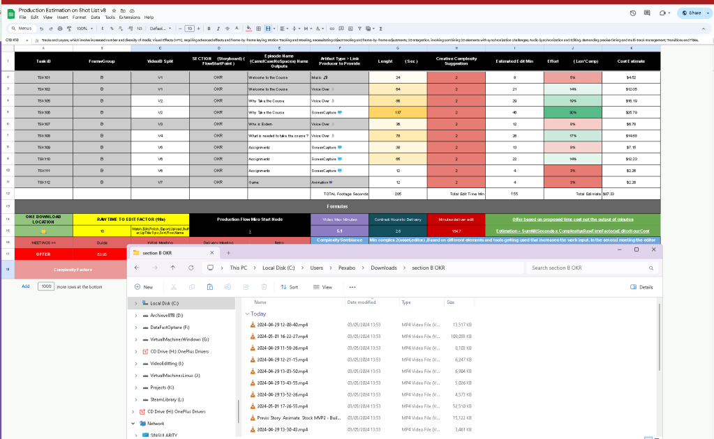
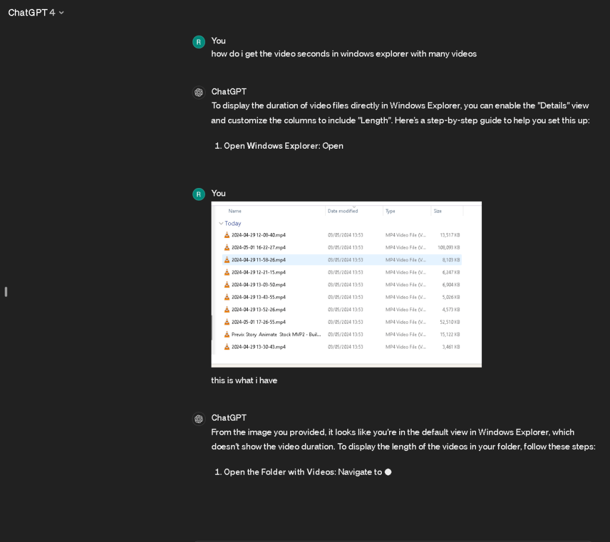
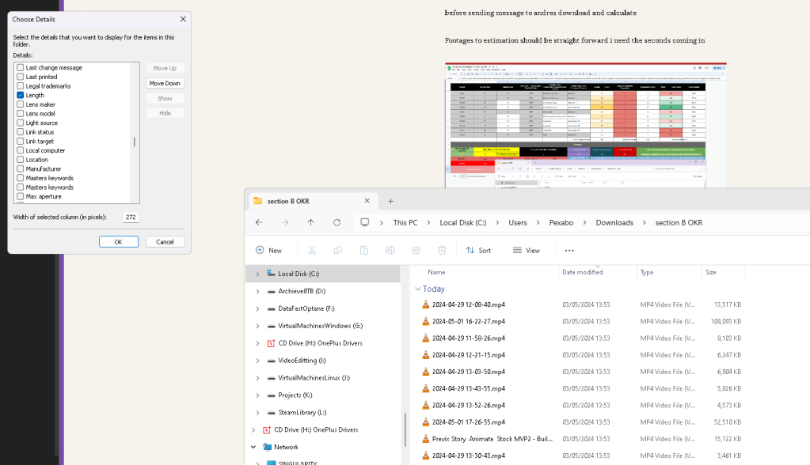
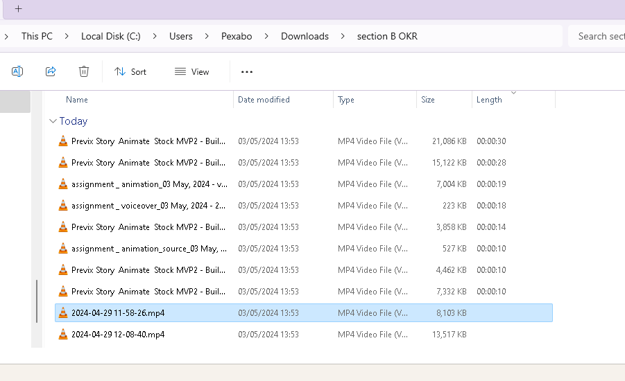
From the image you provided, it looks like you're in the default view in Windows Explorer, which doesn't show the video duration. To display the length of the videos in your folder, follow these steps:
-
Open the Folder with Videos: Navigate to the folder where your videos are stored.
-
Change the View to "Details": In the toolbar at the top of Windows Explorer, find the "View" tab. Click on it and then select "Details" from the available options. This will list your files with more detailed information.
-
Add the "Length" Column:
Right-click on the header of any column (e.g., where it says "Name", "Date modified", "Type", or "Size").
-
A drop-down menu will appear showing various details that can be displayed. Scroll down and check the box next to "Length". This will add a column showing the duration of each video.
-
Adjust Column Order (Optional): If you want the "Length" column to be more visible, you can drag it to a position closer to the "Name" column.
This will allow you to see the duration of each video file directly in Windows Explorer. If "Length" does not appear as an option, or if the videos still don't show their duration, ensure that the files are not corrupted and that you have the necessary codecs installed to read these video files properly. Sometimes, missing codecs or updates can prevent Explorer from displaying video lengths.
=---------------------------
You can use PowerShell to extract and display a list of video files along with their duration in a tabular format. Here’s how you can do it:
-
Open PowerShell: You can search for PowerShell in your Start menu and open it.
-
Navigate to the Video Folder: Use the
cdcommand to change to the directory containing your video files. For example:
cd "C:\Path\To\Your\Video\Folder"
- Run a Script to Display Video Lengths: You can use the following PowerShell command to get the file names and their lengths:
Get-ChildItem -Filter *.mp4 | ForEach-Object {
Add-Member -InputObject $ -MemberType NoteProperty -Name "Length" -Value ([System.Diagnostics.FileVersionInfo]::GetVersionInfo($.FullName).FileVersion)
$_
} | Select-Object Name, Length
This command does the following:
-
Get-ChildItem -Filter *.mp4: Gets all MP4 files in the current directory. You can adjust the filter for other video formats as needed. -
ForEach-Object: Processes each file individually. -
Add-Member: Adds a new property to each file object that includes the video length. -
Select-Object Name, Length: Selects the name of the file and the length property to display. -
Execute the Command: Copy and paste this command into your PowerShell window and press Enter.
If this method doesn't retrieve the video length (as it relies on file version info, which might not always include length), you might need a more robust method using a third-party utility or a different approach to access metadata specific to multimedia files, such as using Shell.Application to access file properties that Explorer uses:
$shell = New-Object -ComObject Shell.Application
$folder = $shell.Namespace("C:\Path\To\Your\Video\Folder")
$folder.Items() | Where-Object {$.Name -like "*.mp4"} | ForEach-Object {
$file = $
$length = $folder.GetDetailsOf($file, 27) # 27 is typically the index for Length
[PSCustomObject]@{
Name = $file.Name
Length = $length
}
} | Format-Table -AutoSize
This script creates a COM object to interact with the Shell just like Windows Explorer, retrieves the length of each video file, and displays it in a neat table. Adjust the path to match where your videos are stored.
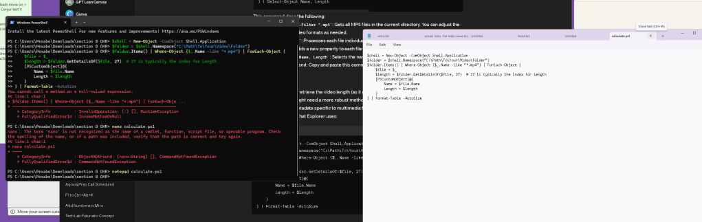
current folder big debug time issue
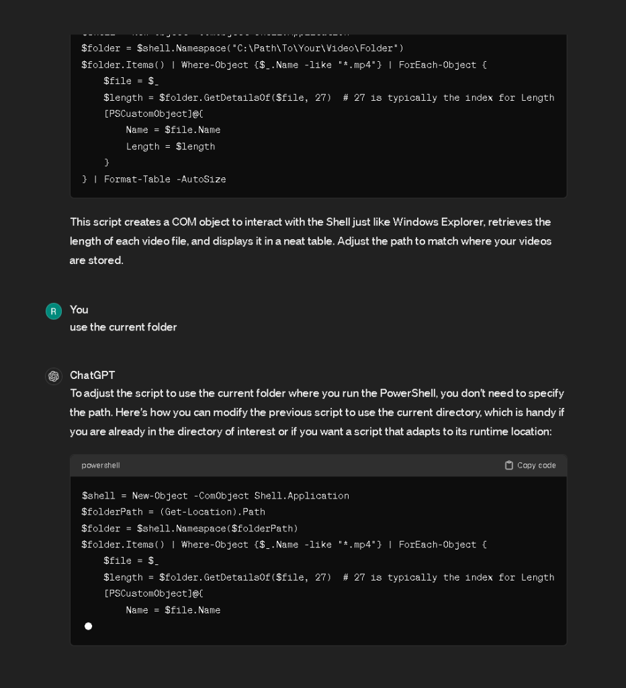
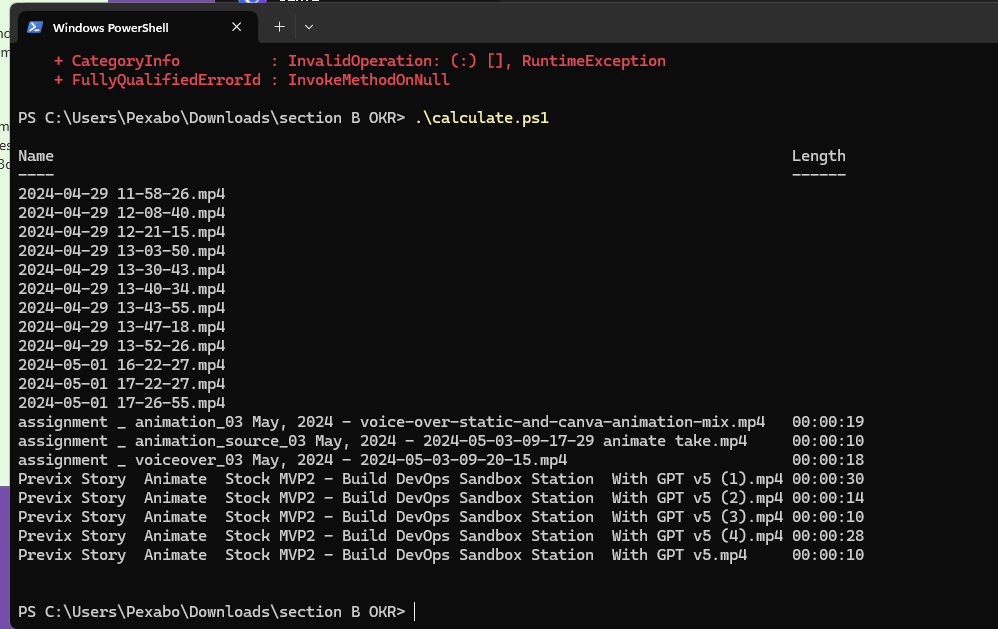
To adjust the script to use the current folder where you run the PowerShell, you don't need to specify the path. Here's how you can modify the previous script to use the current directory, which is handy if you are already in the directory of interest or if you want a script that adapts to its runtime location:
$shell = New-Object -ComObject Shell.Application
$folderPath = (Get-Location).Path
$folder = $shell.Namespace($folderPath)
$folder.Items() | Where-Object {$.Name -like "*.mp4"} | ForEach-Object {
$file = $
$length = $folder.GetDetailsOf($file, 27) # 27 is typically the index for Length
[PSCustomObject]@{
Name = $file.Name
Length = $length
}
} | Format-Table -AutoSize
How to Run This Script
-
Open PowerShell: Open your PowerShell terminal.
-
Navigate to Your Video Folder: Use the
cdcommand to navigate to your video directory, if you're not already there:
cd "Your\Video\Folder\Path"
- Copy and Paste the Script: Copy the modified script provided above and paste it into your PowerShell window. Then press Enter.
This will display a table in PowerShell with the names and lengths of all MP4 files in the current directory. The index 27 for the length might need adjustment depending on your system; if it doesn't show the correct data, you may need to experiment with different indices or check the file properties manually to determine the correct index for length.
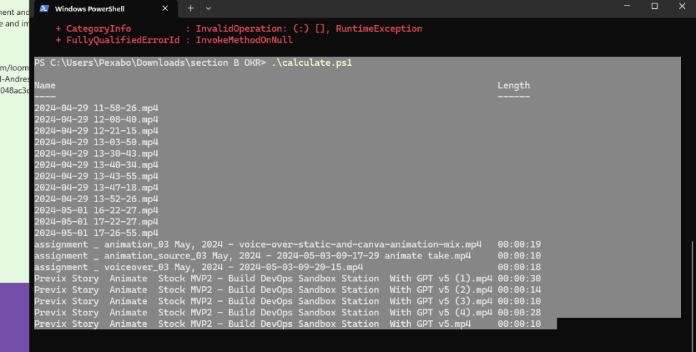
If some video files do not display their length when you run a PowerShell script to extract this information, there could be several reasons:
-
File Properties Not Accessible: In some cases, the shell might not be able to access the duration property due to how the file metadata is stored or accessed. This can happen if the file metadata is incomplete or improperly formatted.
-
Incorrect Metadata Index: The index used to fetch the length (duration) from the file's properties might not be correct for all types of files. Different types of files and even different systems might use different indices for storing the length in the file properties accessible via the Shell.
-
Codec Issues: The absence of the correct codecs needed to interpret the video file can prevent the system from reading its duration. If the necessary codec to decode the video is not installed, Windows might not be able to determine the video's length.
-
Corrupted Files: If a video file is corrupted, it might not be possible to read its duration. This can occur due to incomplete downloads, disk errors, or other issues affecting file integrity.
-
Protected or Locked Files: Sometimes, files might be locked or protected by system or network policies, preventing metadata from being read normally.
-
Non-standard File Formats: Some proprietary or less common video formats might not integrate well with standard file property retrieval methods in Windows.
Solutions:
-
Check Codecs: Ensure that all necessary codecs are installed on your machine. Tools like the K-Lite Codec Pack can help cover most common video formats.
-
Use Media-Specific Tools: Use tools designed for media files, like MediaInfo or VLC Media Player, which can provide detailed information about video files, including those that might not properly display in Windows Explorer or PowerShell scripts.
-
File Repair: If you suspect the file is corrupted, consider using video repair tools to fix them.
-
Administrative Rights: Run PowerShell as an Administrator to ensure you have the necessary permissions to access all file properties.
-
Update System: Ensure your system is up to date, as updates can fix bugs related to file handling and improve compatibility with various file formats.
Here's how you can use MediaInfo with PowerShell to get file lengths, assuming MediaInfo is installed and accessible from your command line:
Get-ChildItem -Filter *.mp4 | ForEach-Object {
$fileInfo = mediainfo --Inform="General;%Duration/String3%" $.FullName
[PSCustomObject]@{
Name = $.Name
Length = $fileInfo
}
} | Format-Table -AutoSize
This script uses MediaInfo to fetch the duration of each video, which can handle a broader range of video formats and metadata configurations than the basic Shell properties method.
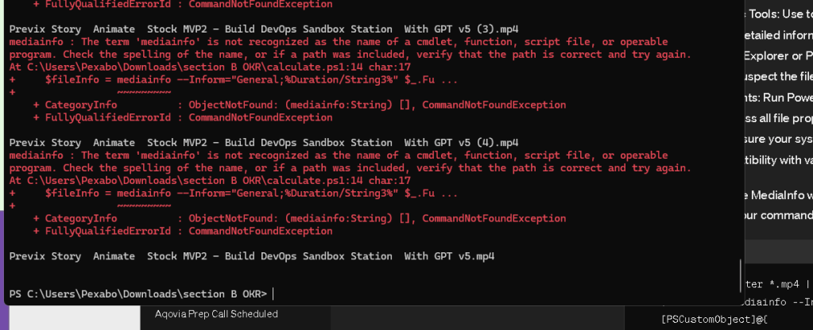
find obs issues
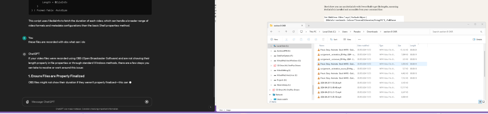
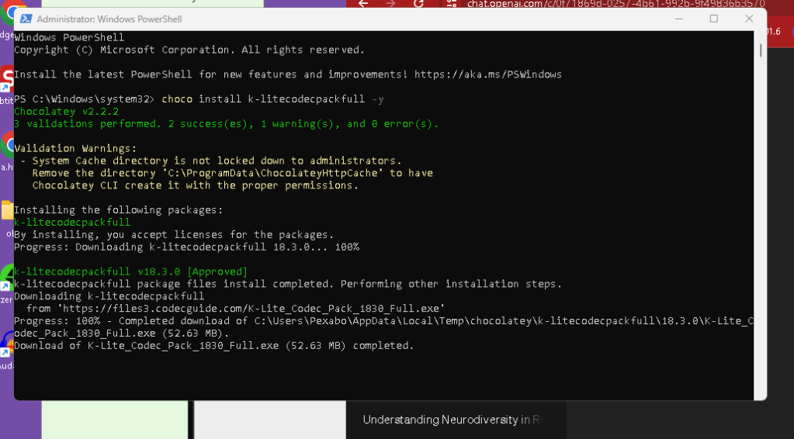
If your video files were recorded using OBS (Open Broadcaster Software) and are not showing their length properly in file properties or through standard Windows methods, there are a few steps you can take to resolve or work around this issue:
1. Ensure Files are Properly Finalized
OBS files might not show their duration if they weren't properly finalized—this can happen if OBS crashed or was closed improperly during recording.
-
Close OBS Properly: Make sure OBS is properly closed after recording. If OBS crashes often, consider updating to the latest version or checking for stability issues related to your hardware or software environment.
-
Re-encode/Remux the Videos: Sometimes the video container might have some inconsistencies that can be fixed by remuxing (repackaging the video and audio streams into a new container without re-encoding). You can use OBS itself to remux videos via the
File > Remux Recordingsmenu.
2. Check and Install Necessary Codecs
Make sure all necessary codecs are installed. OBS typically records in formats like MP4 or MKV using codecs such as H.264. Ensure that your system can handle these codecs:
- Install Codec Packs: Install a codec pack such as K-Lite Codec Pack which includes a wide range of codecs to handle various video formats.
3. Use Media-Specific Tools for Metadata
Using a dedicated media tool can provide more reliable metadata extraction:
-
MediaInfo: This is a powerful tool that can analyze your video files and provide detailed information about them. It can be used via GUI or integrated into scripts as shown previously.
-
VLC Media Player: VLC can also show detailed media information (under
Tools > Media Information), and you might use it to see if VLC correctly reads the duration, which could confirm the file is okay.
4. Script to Check Length with MediaInfo
If you have MediaInfo installed, you can use the following PowerShell script to extract the duration of each video file. This method is generally more reliable for video files recorded with OBS:
Get-ChildItem -Filter *.mp4 | ForEach-Object {
$fileInfo = & 'mediainfo' '--Inform=Video;%Duration/String%' $.FullName
[PSCustomObject]@{
Name = $.Name
Length = $fileInfo
}
} | Format-Table -AutoSize
Make sure to adjust the script with the correct path to your MediaInfo executable if it's not in the system's PATH.
5. Update OBS and Settings
-
Update OBS: Ensure you have the latest version of OBS, as updates often fix bugs related to file handling and compatibility.
-
Check OBS Settings: Verify that your recording settings in OBS are optimal and supported by your system. Avoid using experimental encoders or settings unless necessary.
6. Inspect File Integrity
If issues persist:
-
Check Disk for Errors: Sometimes, disk errors can corrupt files unexpectedly. Running a disk check might help resolve this.
-
Recover Corrupted Files: If a file didn't finalize correctly and remains corrupted, consider using video repair tools or services to recover them.
These steps should help in resolving most issues related to video files recorded with OBS not displaying their length correctly.
still
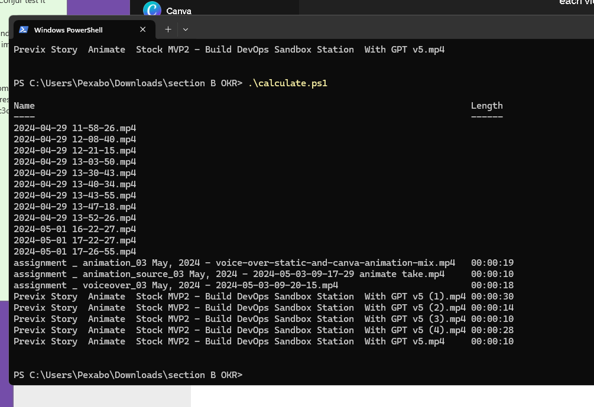
remux again
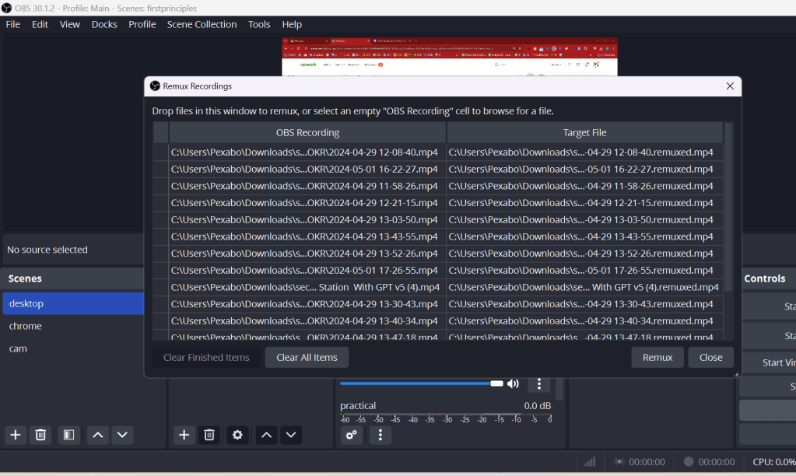
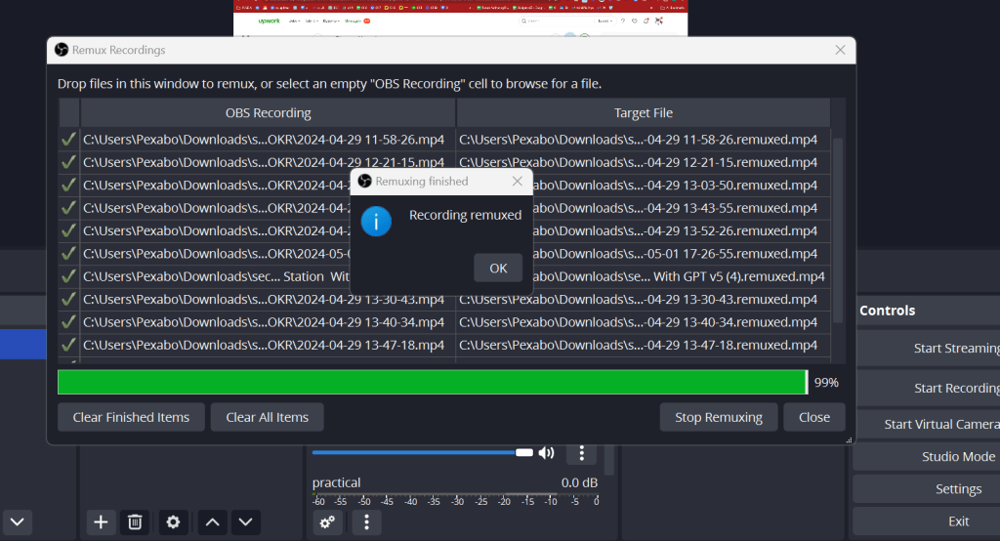
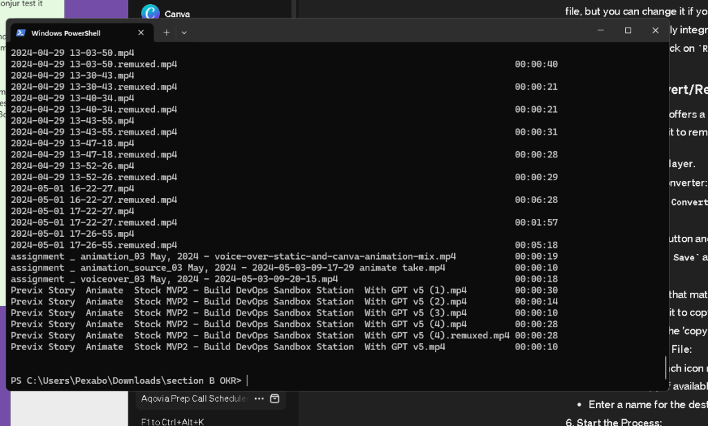
Add the sort and sum
$shell = New-Object -ComObject Shell.Application
$folderPath = (Get-Location).Path
$folder = $shell.Namespace($folderPath)
$folder.Items() | Where-Object {$_.Name -like "*.mp4"} | ForEach-Object {
$file = $_
$length = $folder.GetDetailsOf($file, 27) # 27 is typically the index for Length
[PSCustomObject]@{
Name = $file.Name
Length = $length
}
} | Format-Table -AutoSize
Updated code
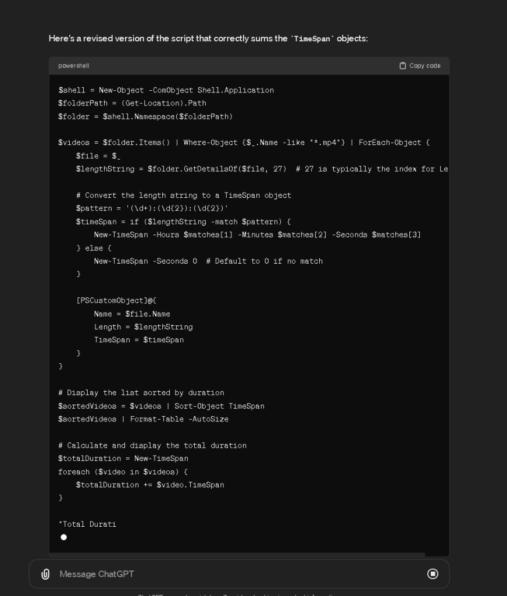
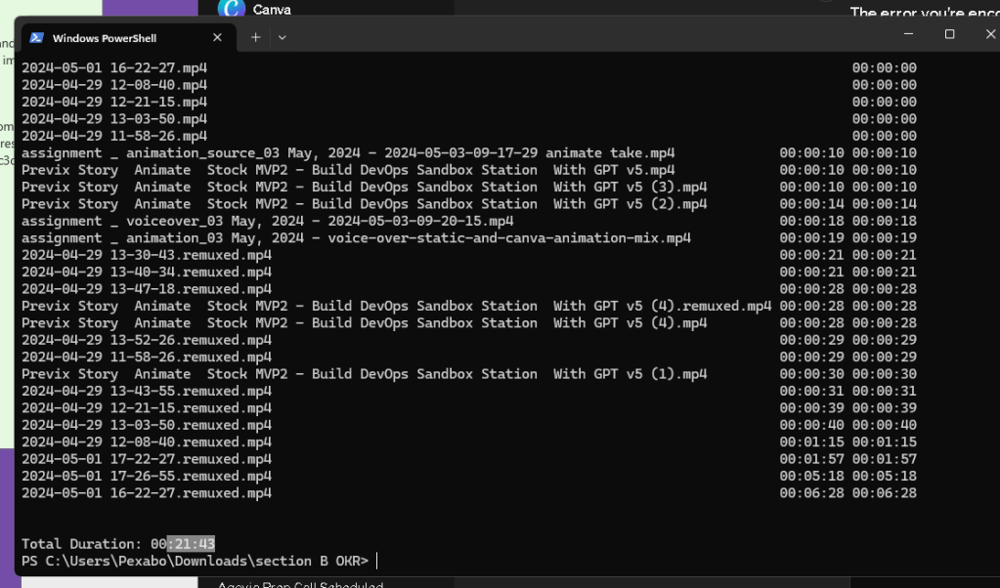
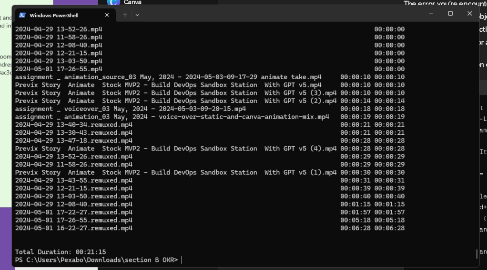
nature of video production
does not make sense with detail > tasks remove now the other parts would be removed

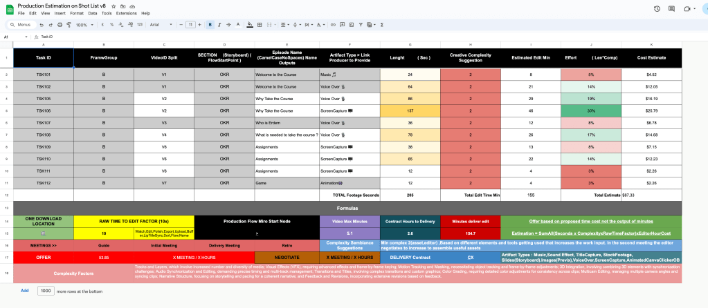
End Result > Create a formula with the gpt
Compare based on relative performance
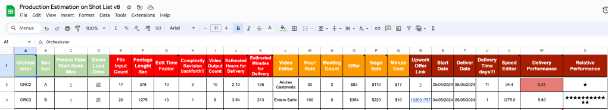
https://docs.google.com/spreadsheets/d/1dtuG0oJte3ebFubnp1TEZ7BdHupkckLASYqm96iRgMc/edit#gid=1366945217
Rationale
To evaluate the performance of the two editors based on their cost and time of delivery, you can consider both the cost per minute of footage edited and the speed of editing (minutes of footage per day). The objective is to establish a formula where performance is defined as a function of cost efficiency and speed.
Let's define the terms for the two editors:
-
Editor A: Charges $90, delivers in 9 days, 3 minutes of footage
-
Editor B: Charges $120, delivers in 3 days, 3 minutes of footage
1. Cost Efficiency: Cost per minute of footage.
-
Cost efficiency for Editor A: ( \frac{\$90}{3 \text{ min}} = \$30/\text{min} )
-
Cost efficiency for Editor B: ( \frac{\$120}{3 \text{ min}} = \$40/\text{min} )
2. Speed of Editing: Minutes of footage edited per day.
-
Speed for Editor A: ( \frac{3 \text{ min}}{9 \text{ days}} = 0.33 \text{ min/day} )
-
Speed for Editor B: ( \frac{3 \text{ min}}{3 \text{ days}} = 1 \text{ min/day} )
Formula for Performance
Let's create a formula where the performance ( P ) of an editor is a function of both cost efficiency ( C ) and speed ( S ). You can define performance as inversely proportional to cost and directly proportional to speed.
[ P = \frac{S}{C} ]
Where:
-
( S ) is the speed of editing (minutes per day).
-
( C ) is the cost per minute of footage.
Using this formula, calculate the performance for both editors:
-
Performance of Editor A: ( P_A = \frac{0.33}{30} )
-
Performance of Editor B: ( P_B = \frac{1}{40} )
Let's compute these to compare numerically which editor has better performance.
The performance calculations for the editors are as follows:
-
Performance of Editor A: 0.011
-
Performance of Editor B: 0.025
With this formula, where performance ( P ) is calculated as ( \frac{S}{C} ) (speed of editing divided by cost efficiency), Editor B demonstrates a higher performance value compared to Editor A. This means that despite being more expensive, Editor B's faster delivery makes his performance rating better when both cost and speed are considered.
Imported from rifaterdemsahin.com · 2024